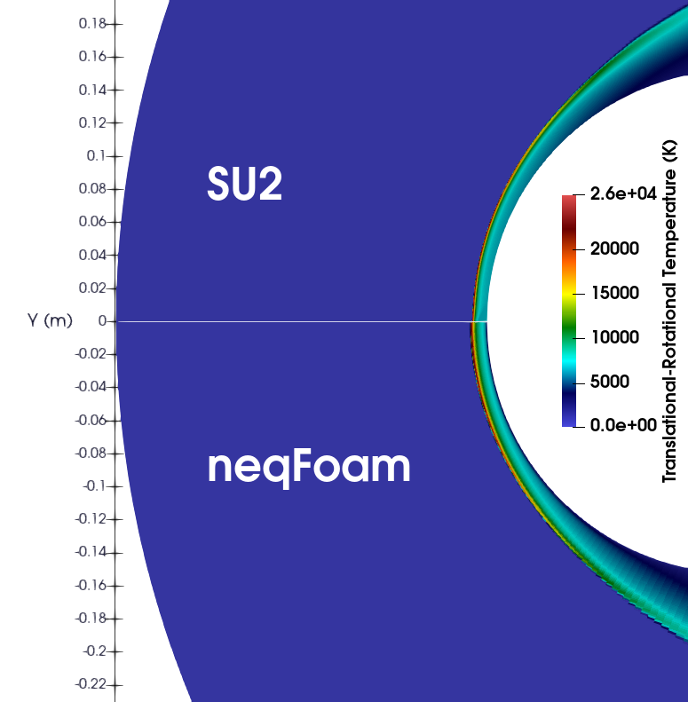
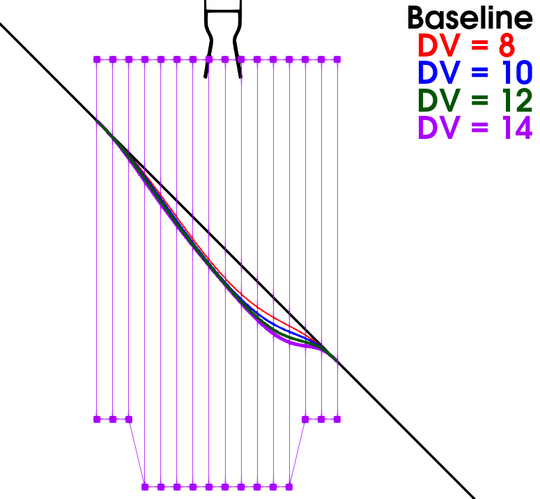
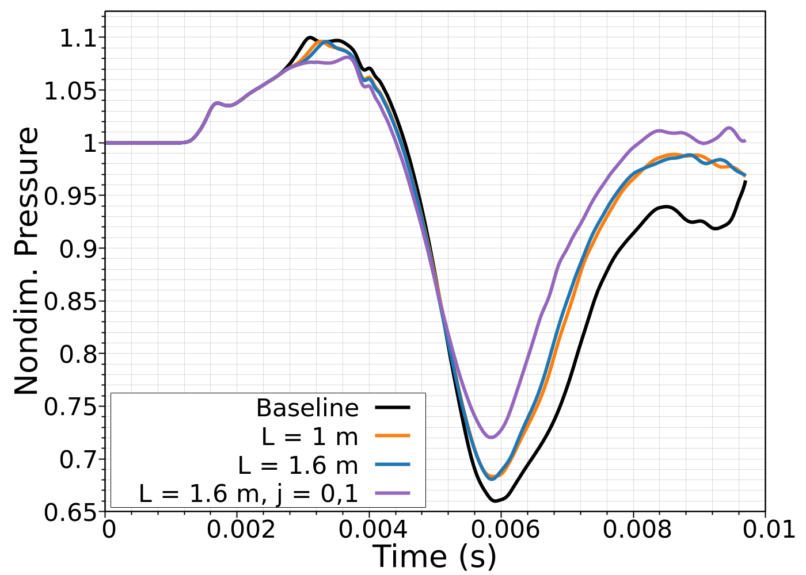
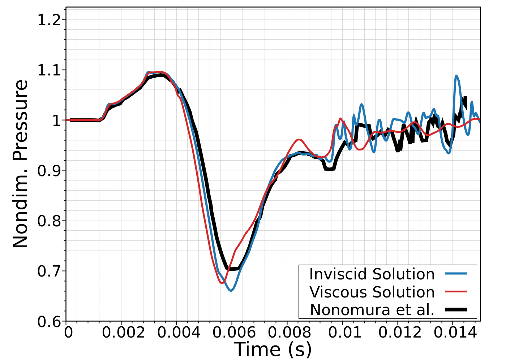
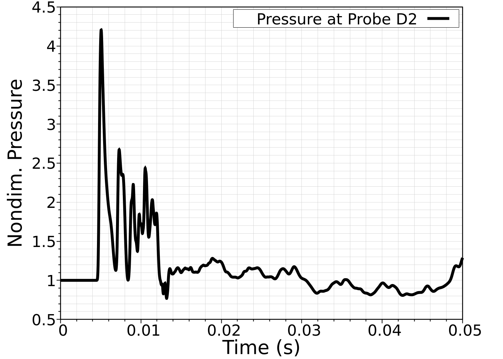

A showcase of research projects I've worked on, from the most recent to the earliest.
Hypersonic Research
During re-entry, extreme temperatures dissociate and ionize the air around a vehicle, forming a plasma sheath that can block radio signals and cause communication blackout. Because ground tests cannot reproduce this environment, CFD is essential, and I am assessing how well open-source solvers capture these thermochemical nonequilibrium flows. Using the NASA RAM-C II flight experiment [1] at Mach 23.9 and 61 km altitude as a benchmark, I compared SU2-NEMO [2] (with Mutation++) and neqFoam against ANSYS Fluent with a two-temperature model and 5-, 7- and 11-species air chemistry.
All three solvers predict comparable stagnation pressure and temperature, and both open-source codes resolve the hot, highly ionized post-shock layer, with peak temperatures around 26,000 K and electron number densities near 1.5×1020 m-3. Remaining differences in electron density point to chemistry, viscous transport and electron diffusion modeling as the next steps toward predicting communication blackout. This work was presented at the 27th AIAA Hypersonics Conference in Naples.

Unsteady Adjoint Optimization of a Flame Deflector
When a solid rocket booster ignites, it launches strong, transient Ignition Overpressure (IOP) waves into the launch environment. These waves reflect off the flame deflector and travel back toward the vehicle, where the high-amplitude loads can damage the structure and sensitive payloads. My thesis [3] asks whether the deflector itself can be reshaped to weaken these reflected waves.
Because IOP and the starting vortex that follows it are inherently unsteady, the optimization has to be time-accurate. I used the unsteady discrete adjoint framework in the open-source SU2 solver to reshape a 45° flat-plate deflector, with the deflector wall controlled by the points of a free-form deformation (FFD) box. The objective measures the pressure at a probe point over a window that covers both the IOP peak and the vortex suction. It penalizes overpressure fully and suction with a lower weight, so the larger suction does not dominate.
For probe point 10, just beside the rocket, the optimizer carves a concave cavity that moves the deflector away from the probe. With one row of FFD points moving, the objective drops by up to 26%, mostly through weaker suction. When both rows of FFD points can move over a 1.6 m wall, the objective drops by 44.8%, the IOP peak by 18.8% and the vortex suction by 17.7%.


Targeting a probe on the rocket surface instead produces the opposite shape: a convex bump beneath the nozzle that reduces the objective by 43.2% and the peak surface overpressure by 20.1%. The best deflector shape therefore depends strongly on where the pressure is to be reduced. To my knowledge, this is the first time flame deflector shapes have been obtained from the unsteady adjoint sensitivity of a transient IOP–vortex objective, and the whole workflow uses open-source tools so it can be reproduced.
Flame Deflector Investigation
2D Investigation
Before optimizing anything, the launch environment had to be simulated reliably. I used a benchmark from the literature [4], [5]: a booster with a 0.1 m nozzle placed 0.5 m above a 45° flat-plate deflector. Time-accurate SU2 simulations ramp the inlet total pressure to mimic ignition. Right after ignition, the expanding plume compresses the air between the nozzle and the deflector into the IOP wave. A starting vortex then rolls up along the deflector and creates a suction region near the vehicle, and high-frequency acoustic waves eventually dominate the field.
Mesh and time-step studies [3] showed that the main IOP and suction peaks are insensitive to grid resolution, while the later acoustic fluctuations are not, as Housman et al. also observed [4]. Inviscid (Euler) and viscous (RANS) solutions both agree well with published results in the IOP region, including those of Nonomura et al. [5]. The inviscid model predicts a stronger suction peak, because it lacks viscous damping. Since the Euler simulations capture the main IOP–vortex structure at a fraction of the cost (about 30 minutes vs. 9 hours per run), they were used for the optimization.

Video 1. Pressure environment after solid rocket booster ignition for the 2D benchmark case.
3D Investigation
To move toward realistic launch pads [3], I modeled a 3D launch pad geometry from the literature: a four-nozzle vehicle above a deflector with a 60° impingement section, a launch stand close to the rocket, and side walls that keep the flow within the pad. The fully structured volume mesh has nearly 15 million cells, and convergence was accelerated with multigrid on top of an adaptive CFL strategy.
Pressure probes at the nozzle centerline, the base of the rocket, the deflector surface and beneath the launch stand trace how the IOP waves spread through the pad over time. A single inviscid run takes more than a week and its contour output for just 0.03 s of flow reaches about 2 TB, which is why 3D unsteady adjoint optimization is planned as future work.

Video 2. Launch environment investigation of a 3D solid rocket booster benchmark case.
SU2-NEMO Validation for Supersonic & Hypersonic Flows
As an Erasmus+ intern at the Department of Aerospace Science and Technology (DAER) of Politecnico di Milano, under the supervision of Assoc. Prof. Luigi Vigevano, I worked on validating SU2-NEMO, the nonequilibrium extension of the open-source SU2 solver, for 2D and 3D supersonic and hypersonic flows. The work focused on the aerodynamic evaluation of re-entry vehicles, and it started my research on high-speed nonequilibrium flows that continues in my current hypersonic work at METU.
References
- W. L. Jones, Jr. and A. E. Cross, “Electrostatic-probe measurements of plasma parameters for two reentry flight experiments at 25,000 feet per second,” NASA TN D-6617, 1972.
- W. T. Maier, J. T. Needels, C. Garbacz, F. Morgado, J. J. Alonso, and M. Fossati, “SU2-NEMO: An open-source framework for high-Mach nonequilibrium multi-species flows,” Aerospace, vol. 8, no. 7, p. 193, 2021, doi: 10.3390/aerospace8070193.
- E. U. Danışan, “Unsteady adjoint-based optimization of flame deflectors to mitigate ignition overpressure,” M.S. thesis, Dept. of Aerospace Engineering, Middle East Technical University, Ankara, Türkiye, Apr. 2026.
- J. Housman, M. Barad, and C. Kiris, “Space-time accuracy assessment of CFD simulations for the launch environment,” in 29th AIAA Applied Aerodynamics Conference, 2011, doi: 10.2514/6.2011-3650.
- T. Nonomura, S. Tsutsumi, R. Takaki, E. Shima, and K. Fujii, “Impact of temporal and spatial resolution on the aeroacoustic waves from a two-dimensional impinging jet,” in Proceedings of the Seventh International Conference on Computational Fluid Dynamics (ICCFD7), Big Island, Hawaii, 2012, paper ICCFD7-3103.